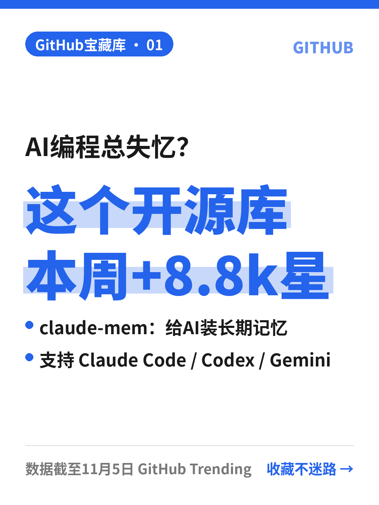

标题
🧠让AI编程不再失忆的神器
正文
用AI写代码最烦的是什么？ 每开一个新对话，它就把之前的项目全忘了😩 今天挖到的宝藏：claude-mem 🔍 它能干嘛 · 自动记录AI助手在每次会话里做了什么 · 用AI把这些记录压缩成精华 · 下次开新会话时，把相关上下文自动「喂」回去 相当于给你的AI编程助手装了个长期记忆🧠 🛠 支持哪些工具 Claude Code、Codex、Gemini、Copilot、OpenCode 等都能用 📊 数据（截至11月5日GitHub Trending） ⭐ 113,030 stars 📈 本周新增 8,822 stars 💻 语言：TypeScript 👉 项目地址：github.com/thedotmack/claude-mem 适合每天重度用AI写代码的朋友，先收藏⭐再慢慢折腾～
话题
#GitHub #开源项目 #AI编程 #ClaudeCode #程序员 #效率工具
参考来源（不用发）
https://github.com/thedotmack/claude-mem https://github.com/trending?since=weekly